Next: Abstract Data Types
Up: Sorting
Previous: Some Example Sort Implementations
Contents
Index
Questions 2 (Hints and solutions start on page ![[*]](file:/maths/faces/local/lib/latex2html-2K.1beta/icons/crossref.gif) .)
.)
Q 2.1
Just to check that you understand the basic notations, let
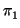 = 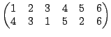, 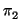 = 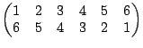
be permutations in
S6. Work out

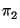,
,

, 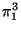. Decompose
and as
products of disjoint cycles.
Show that the inverse of a cycle is a cycle. What is the
inverse of
a1, a2,..., ak?
Q 2.2
Suppose that a permutation
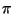
 Sn
Sn decomposes into a
product of disjoint cycles as

= 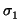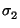...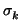.
Find the smallest positive integer
m such that 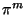 =
id ( the
order of ) in terms of the lengths of the sigmas.
Q 2.3
If we have a pack of 16 cards then the effect of a
split-and-interleave shuffle is one of the following permutations,
depending on which `hand' is uppermost.
= 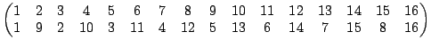
= 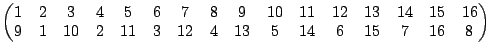
Break each permutation into a product of disjoint cycles and then
find the smallest positive integers
n,
m such that
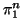 =
id and
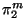 =
id.
(If you've got paper and patience you can do the same for a pack of
52 cards.)
Q 2.4
Bearing all this stuff about decompositions in mind, what
permutations in
S10 have the highest degree, and what is that
degree? (Once more: the
degree of a permutation is the
smallest positive integer
n such that 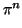 =
id, where
id is
the `identity permutation' that changes nothing.)
What are the permutations of highest order in S20? Please don't
check through all
20! = 2, 432, 902, 008, 176, 640, 000 cases!
Q 2.5
In the following parts I want you to write an algorithm
to perform the desired calculation. At the least, sketch out the way
in which such an algorithm would operate. At the most, if enthusiastic,
write an actual program in some language.
Let us adopt the convention that a permutation is represented
by an array
(a1, a2,..., ak), standing for the permutation
= 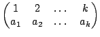
- Given two permutations and , calculate their product;
- calculate the inverse of a permutation; and
- decompose a permutation into a product of disjoint cycles.
You will need to decide on a useful form for the `output'.
Q 2.6
Work through each sorting algorithm carefully for each of the
following lists -- pretend to be a computer.
5,4,6,8,2,1,3,9,0,7
0,1,2,3,4,5,6
6,5,4,3,2,1,0
1,1,1,2,2,2,2
Q 2.7
If, in Quicksort, we choose the first element of each sublist as
separator at each stage then the very worst case of the algorithm
comes when you present it with a list that is already in order!
In this case the algorithm achieves as little dividing and
conquering as possible. If T(n) is the running time for this case
and the separation time is  n, show that
T(n) = n + T(n - 1)
and deduce that
T(n) = O(n2).
n, show that
T(n) = n + T(n - 1)
and deduce that
T(n) = O(n2).
Q 2.8
Which of the sorting algorithms are stable? Recall the definition of
stable: We have a list of elements
x1,...,
xn. They may
all be different but some are the same as far as the inequality is
concerned (e.g. the elements may be pairs of numbers
xi = (
a,
b) and
we may be putting them into order according to the first
element). Suppose that
xi and
xj are equal as far as the
inequality is concerned. Then the sort is
stable if it
preserves the order in which
xi and
xj came in the list.
Q 2.9
Before looking at the notes, which contain the answer, try to think up
an algorithm for
merging two ordered list into a single
ordered list. You are given lists
(
x1,...,
xn) and
(
y1,...,
ym) both of which are in increasing order and you want
to put them together into a list
(
z1,...,
zn + m) which is also
in increasing order. Your method should not take time worse than
O(
n +
m) (it should be roughly proportional to
n +
m). When you have
done this compare your result with the version in the notes.
Can you adapt the algorithm so that it finds the union of the
two lists x  y ? -- i.e. there are to be no repeated elements in
z.
y ? -- i.e. there are to be no repeated elements in
z.
Q 2.10
Suppose we want to sort a list
(
x1,...,
xn) into order.
If we use Insertion Sort it will take time roughly proportional to
n2.
Suppose that we do the following instead: first split the list into
two halves, then apply insertion sort to each half, then merge the results
by the algorithm of the previous question. Show that this should lead
to a faster sorting routine if
n is reasonably large. What about
subdividing the list into a larger number of sublists?
Suppose that you don't split the list into two halves but just
divide it randomly into two parts before starting the above process. Are
you likely to get much of an advantage over direct Insertion Sort or
does this depend on the split being almost exactly half way?
Q 2.11
Write a careful algorithm to decide the alphabetical order of two
words. To be more precise: define a function
ord(a,b) which,
given the strings of letters
a and
b returns 1 if
a
is alphabetically before
b, 0 if they are equal and -1 if
b is alphabetically before
a. You may assume that the end of
each word is marked in the string by the `letter'

.
Q 2.12
We have been working with recursive programs, so let's look at
recursive functions.
Let P(n) be the number of ways of decomposing n as a sum of positive
integers, ignoring order.
e.g.4 = 4 = 3 + 1 = 2 + 2 = 2 + 1 + 1 = 1 + 1 + 1 + 1soP(4) = 5
P is a surprisingly important function. It would be nice if we could
calulate its values without having to write down all possible decompositions.
The easiest approach is to define a function Q(n, m) which gives the
number of ways of decomposing n using no numbers bigger than m. For
example Q(4, 1) = 1, Q(4, 2) = 3, Q(4, 3) = 4 . Obviously
P(n) = Q(n, n).
I am now going to give you a recursive definition of Q. I want you to show
that it is correct in the following two senses: (1) starting with any
(n, m) (n, m 1) it allows us to find Q(n, m), and (2) the answer you
get is correct.
1) it allows us to find Q(n, m), and (2) the answer you
get is correct.
The following are meant to be applied in order:
-
Q(1, m) = 1 if m1
-
Q(n, 1) = 1 if n1
-
Q(n, m) = Q(n, n) if
mn1
-
Q(n, n) = Q(n, n - 1) + 1 if n2
-
Q(n, m) = Q(n, m - 1) + Q(n - m, m)
The usual problem you run into with such definitions is that it is possible
to get trapped into an infinite loop from which there is no escape.
Whilst you are at it, work out a few values of P(n).
Another famous recursive function is Ackerman's function. This was designed
to be a nuisance. The function A(n, m) is defined as follows:
-
A(0, m) = m + 1
-
A(n, 0) = A(n - 1, 1)
-
A(n, m) = A(n - 1, A(n, m - 1))
Work out
A(3, 2). Roughly how many digits has
A(4, 2)? If you had to
write out
A(4, 4) would the forests of Sweden be sufficient, or would
you have to use up the Amazon basin as well?
Q 2.13
In case you found the timing argument for insertion sort a bit
too glib, try the following alternative:
Let
Sn be a permutation of
{1,..., n}. Think of as
a (shuffled) list. For
i = 1,..., n let
m (i) be the number of
elements in the list that are to the right of i and are
less than it.
(i) be the number of
elements in the list that are to the right of i and are
less than it.
if
= (42153)
 S5
S5then
m(1) = 0,
m(2) = 1,
m(3) = 0etc
Why is
m(1) +
... +
m(
n) equal to the number of `moves' that
need to be made in the insertion sort of
Sn?
Show that
0 m(i)i - 1fori = 1,..., n.
m(i)i - 1fori = 1,..., n.
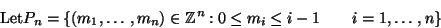
We have a mapping
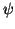 :
Sn Pn
Pn given by
() = 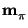.
(1) Show that
|Pn|= n! =|Sn|.
(2) We now want to prove that is a bijection.
Since both sets have the same number of elements it is sufficient to prove
that is onto. So we have to prove that, given
 Pn, we can find
Sn such that
() = .
Pn, we can find
Sn such that
() = .
Show how to reconstruct
(4, 2, 1, 5, 3) from
= (0, 1, 0, 3, 1).
What perm
Sn produces
= (0, 0, 1, 2, 0, 4, 1, 4, 6)?
Can you now give a rough argument to show that is onto?
For
Sn let
(
) = 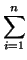
m(
i)
-- the total number of `moves' in the insertion sort of . Then the
average number of moves for all
Sn is
| av |
=  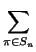() 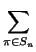() |
|
| |
= 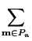mi why? |
|
| |
= mi |
|
What is 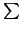mi over
Pn? (Work out some simple examples.)
Now calculate av.
Q 2.14
a) Describe the ``Quicksort'' algorithm for sorting a list and
give pseudo-code for a routine
quicksort(x, lo, hi)
which sorts the sublist
xlo,...,
xhi of the list
x.
You may assume that the routine
separate(x,lo,hi,sep), in
which a list is separated into two sublists based on the separator
sep, is available. Illustrate your answer by ``quicksorting''
the list
[When making a ``random'' choice from a list, choose the item that
occurs in the first position, so a ``random'' choice from [2, 1, 3]
would be 2.]
b)
Let Tn be the average time taken to quicksort a list of n
elements. Assuming that the separation algorithm applied to a list of
length n takes time n, derive the recurrence relation
Tn =
 n
n + 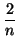
 Tk
Tk,
explaining what other simplifying assumptions have been made. Hence
show that
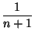
Tn =
T0 +

.
c)
How does Quicksort compare with insertion sort and
Heapsort?
Next: Abstract Data Types
Up: Sorting
Previous: Some Example Sort Implementations
Contents
Index
Ian Craw
2001-04-27